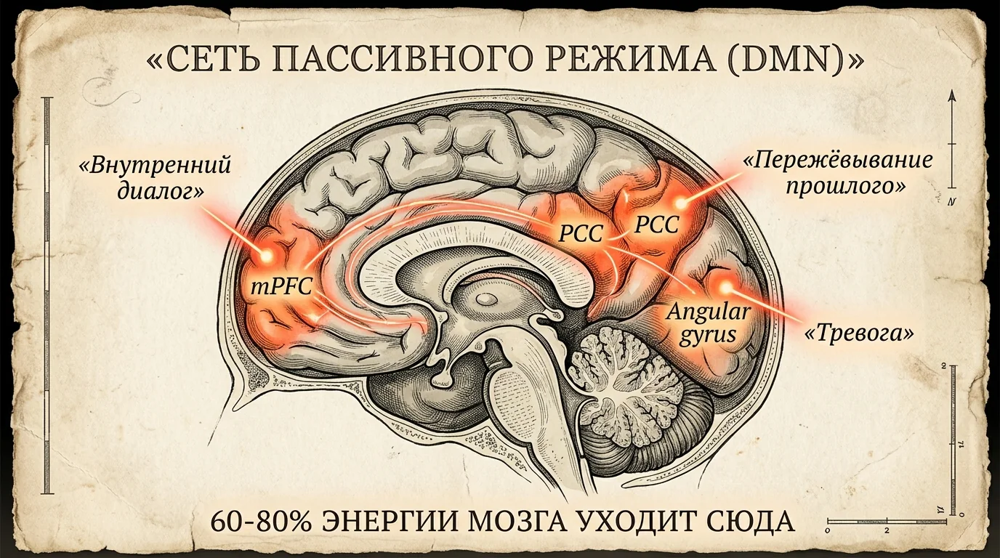
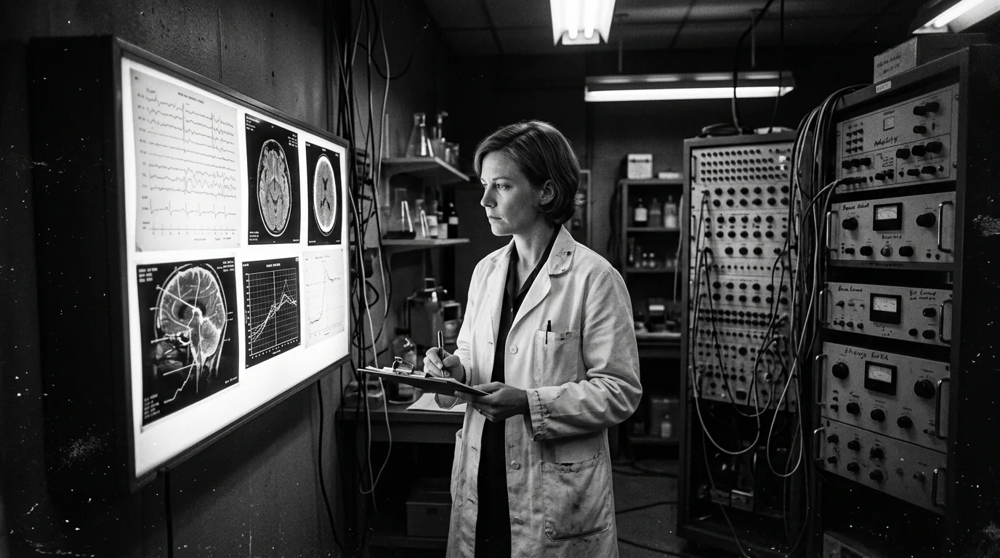
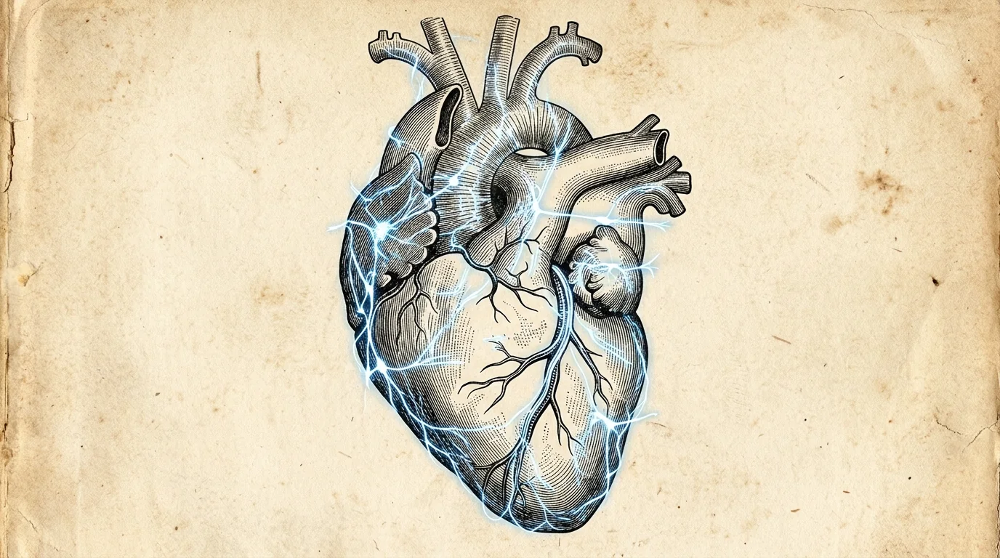
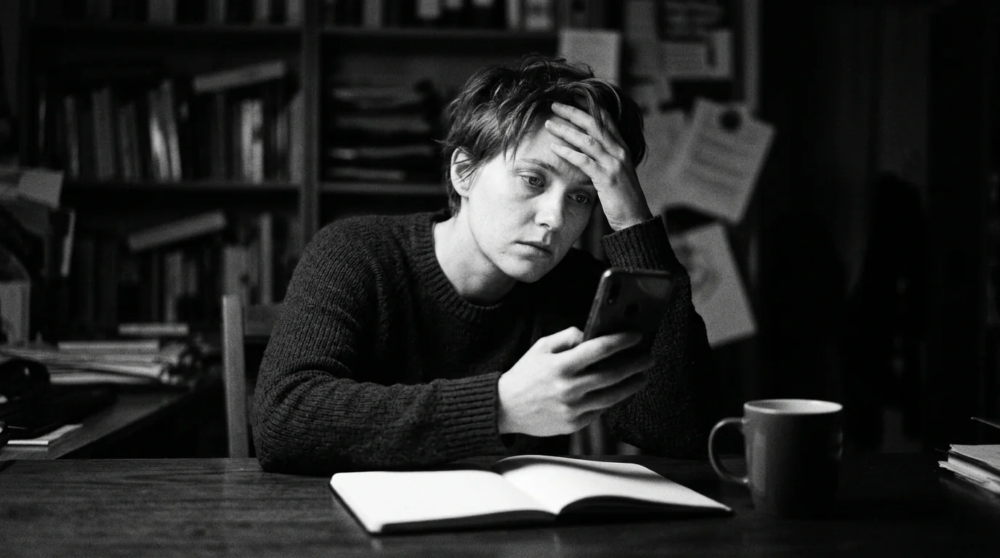
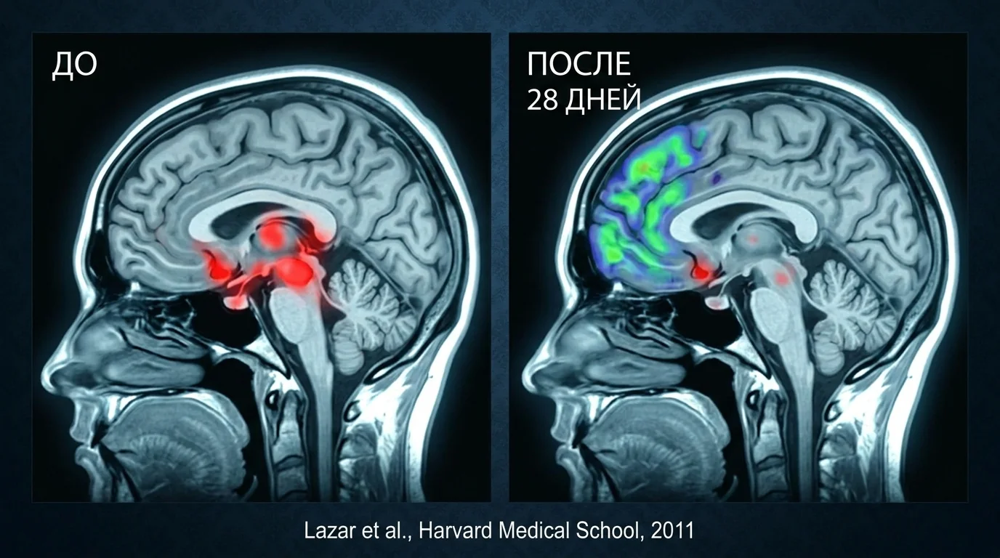

Мозг, это операционная система жизни.
Не мотивация. Не дисциплина. Не привычки. Мозг.
Когда им не управляешь, он управляет тобой. И делает это жёстко.
Это он решает, сколько денег на счёте, потому что именно он генерирует тревогу, из-за которой откладываются решения, упускаются возможности и выбирается «безопасное» вместо правильного.
Это он решает, как себя чувствует тело, потому что именно он запускает гормоны стресса, подавляет иммунитет, разгоняет воспаление и удерживает лишний вес. Каждую секунду. Без спроса.
Это он решает, какие решения принимаются, в бизнесе, в отношениях, в жизни. И пока он в режиме шума, решения будут из страха, а не из ясности.
Это он решает, есть ли энергия, или к вечеру не остаётся сил даже на разговор. Потому что он сжигает 20% всей энергии на бессмысленный внутренний монолог.
Это он решает, есть ли уверенность, или бесконечные «а вдруг», «а что подумают», «а вдруг не получится».
Неуправляемый мозг, это кукловод. А человек, марионетка. Которая думает, что принимает решения сама. Но на самом деле, выполняет программу, записанную годами тревоги, страха и автоматических реакций.
Человек, который управляет мозгом, управляет всем. Деньгами. Здоровьем. Временем. Отношениями. Собой.
Но есть рычаг, который эту способность блокирует. У 90% людей. Прямо сейчас. Конкретный нейробиологический механизм. Открыт в 2001 году. Изучался военными с 1970-х. DARPA потратило на него $2 миллиарда. ЦРУ засекречивало результаты до 2003 года.
А вам о нём не рассказали. Потому что человек, который знает, как работает этот рычаг, перестаёт быть управляемым. Перестаёт покупать лишнее. Тревожиться по расписанию. Откладывать жизнь на понедельник.
Те, кто этот рычаг нашли и переключили, живут иначе. Не потому что умнее или удачливее. Потому что перестали быть марионетками своего мозга.
В этой статье, 7 фактов. Что это за рычаг. Как он работает. Что отнимает. И как его переключить.
Читайте внимательно. Эта информация меняет всё.
Счастье заблокировано. На уровне мозга. И ни деньги, ни отношения, ни успех, не разблокируют.
Есть вещь, о которой почти никто не говорит вслух. Но именно она, фундамент, на котором строится всё остальное.
Счастье.
Не то, которое «когда-нибудь потом». А то, которое прямо сейчас, в этом теле, в эту секунду. Ощущение: я на месте. Я, это я. Жизнь, хорошая.
Это не «приятный бонус». Это база, от которой зависит буквально всё.
Когда человек в состоянии внутреннего покоя и наполненности, мозг работает принципиально иначе. Неокортекс, пространство идей, стратегий, видения, активен. Человек видит возможности, принимает точные решения, действует из ясности. Рептильный мозг, центр выживания, спокоен. Не орёт «опасность!», не запускает панику, не заставляет спасаться от угроз, которых нет.
В этом состоянии гормональный фон здоровый: кортизол низкий, серотонин и дофамин в балансе, DHEA активен. Тело восстанавливается. Иммунитет работает. Вес нормализуется сам. Энергии хватает на всё.
В этом состоянии деньги приходят, потому что ясный ум видит то, что тревожный пропускает. Отношения выстраиваются, потому что рядом со спокойным человеком хорошо. Цели реализуются, не через насилие над собой, а через ресурс. Спокойно. Точно. Вовремя.
Это не теория и не «мышление изобилия». Это нейробиология. Счастье, это операционная среда, в которой всё работает. Без неё, ничего не работает. Как бы ни старался.
И вот в чём ловушка: почти у всех эта среда заблокирована.
В 2010 году Киллингсворт и Гилберт из Гарварда опубликовали в Science исследование, которое объясняет почему.
46,9% времени бодрствования мозг уносит человека из настоящего момента. В тревогу о будущем. В пережёвывание прошлого. В бесконечное «а что если».
Половина жизни проходит не здесь. А в месте, которого не существует, в прошлом, которое уже прошло, или в будущем, которое ещё не наступило.
И в эти моменты, а это половина жизни, люди были глубоко несчастны. Не потому что думали о плохом. А потому что их не было там, где они были.
Счастье физически невозможно, когда человека нет в настоящем. Мозг не может одновременно тревожиться о завтра, и наслаждаться тем, что есть. Не может прокручивать вчера, и чувствовать покой. И пока он в этом режиме, неокортекс выключен, рептильный мозг рулит, гормоны стресса хлещут.
Ребёнок обнимает, а голова на работе. Партнёр говорит «люблю», а внутри список дел. Достигнута мечта, а радости нет. Потому что некому радоваться. Хозяина нет дома.
И никакие деньги это не починят. Никакой партнёр. Никакая карьера. Потому что сначала нужно вернуться в собственную голову. И забрать управление у машины, которая давно решает за вас.
У этой машины есть имя.
Killingsworth M.A., Gilbert D.T. (2010). Science, 330(6006), 932.
Внутри живёт паразит, который питается энергией, сном и радостью. И его кормят каждый день, не зная об этом.
Сделайте одну вещь прямо сейчас. Серьёзно.
Закройте глаза. Тридцать секунд. Ничего не делайте. Просто заметьте: что происходит внутри?
Тишина?
Нет. Там толпа. Мысли лезут одна поверх другой. «Что на ужин.» «Я забыл перезвонить.» «А если не успею?» «Какой курс доллара.» «Почему она не ответила.» «Зря я тогда не…» «Господи, когда это кончится.»

Это ваш мозг, который фоново, каждую минуту, изо дня в день является тем самым кукловодом. Система, которую открыл в 2001 году нейробиолог Маркус Рейчл и назвал Default Mode Network (DMN), сеть пассивного режима мозга.
И вот что нужно понять раз и навсегда: DMN, это не просто фоновый шум. Это система, которая формирует состояние. Каждую секунду.
Каждое «а вдруг?», микроинъекция страха.
Каждое «зря я так сказал», микроинъекция стыда.
Каждое «что обо мне подумают», микроинъекция тревоги.
Каждое «у других получается, а у меня нет», микроинъекция отчаяния.
Тысячи инъекций. Каждый день. Годами.
мозг «не здесь»
на DMN
после 8 недель
Вот откуда ощущение, что жизнь тяжёлая, хотя объективно «всё нормально».
Вот откуда «просыпаюсь уже уставшим», DMN потребляет 20% всей энергии мозга. Двадцать процентов. Даже ночью. Даже «на отдыхе».
Вот откуда «отпуск не помогает», потому что DMN едет с вами. На море, в горы, на Бали. Везде.
Вот откуда «нет сил вообще ни на что», мозг разряжается к обеду, потому что с утра его выжимает шум.
Вот откуда «всё раздражает», не плохой характер, а пустой бак.
И вот что убивает: люди привыкают. Думают, что так и должно быть. «Я просто тревожный.» «Такой характер.» «Наверное, надо больше спать.»
Нет. Гиперактивная DMN. Тот самый кукловод. Он пожирает энергию, сон, радость, решения, жизнь, и дёргает за ниточки каждую секунду. Пока его не выключат.
Но сначала, что он делает с телом. Потому что тревога и бессонница, это только начало.
Raichle M.E. et al. (2001). PNAS, 98(2), 676-682.
Прямо сейчас мысли разрушают тело, ускоряют старение, формируют и удерживают болезни. Без преувеличений. Это биохимия.
Каждый раз, когда DMN прокручивает тревожную мысль, мозг отправляет телу команду: «Опасность!»
Тело не умеет отличить мысль об угрозе от реальной угрозы. Для него «а вдруг меня уволят» и «за мной бежит медведь», один и тот же сигнал. Кортизол. Адреналин. Мобилизация. Сжатие. Готовность к бою.
Бой не наступает. Потому что его не было. Была мысль. Но тело уже отреагировало.
И вот что происходит, когда этот режим не выключается месяцами, годами, десятилетиями:
Хроническое воспаление, тихий пожар внутри, который не чувствуется. Основа 80% всех серьёзных болезней. Сердце, суставы, кишечник, кожа, щитовидка, всё горит на медленном огне
Иммунитет перестаёт защищать. Болеете каждый сезон. Восстанавливаетесь неделями. Аллергии из ниоткуда. Аутоиммунные реакции, тело атакует само себя
Лишний вес, который не уходит, кортизол блокирует жиросжигание физически. Тело запасает жир «на случай катастрофы». Никакая диета не победит биохимию хронического стресса
Память разрушается, гиппокамп деградирует от кортизола. «Забываю всё», «не могу сосредоточиться», «где мои ключи», это не рассеянность. Это повреждение
Кожа стареет, волосы выпадают, гормоны съезжают, и кажется, что это «возраст». Нет. Это режим нервной системы

Походы к врачам. Анализы. Витамины. БАДы за бешеные деньги. Очередная диета. Поиск «хорошего специалиста». А причина сидит внутри, и никто её не трогает. Потому что фармацевтический рынок, $1,6 триллиона в год. Им выгодно, чтобы лечились следствия. Вечно.
А теперь, то, от чего по-настоящему становится не по себе.
Нобелевский лауреат Элизабет Блэкбёрн и Элисса Эпель из UCSF обнаружили: хроническая руминация, то самое бесконечное пережёвывание мыслей, физически укорачивает теломеры. Защитные колпачки хромосом. Биологические часы клетки.
У людей с неутихающим умом клетки были биологически старше на 10 лет. Не месяцев. Лет. При том же возрасте по паспорту.
с воспалением
при тихом уме
Мысли прямо сейчас решают, с какой скоростью идёт старение. Как часто болеть. Сколько лет осталось. Это не метафора. Это Нобелевская премия 2009 года.
И наоборот: у тех, кто научился выключать DMN, теломераза (фермент, восстанавливающий хромосомы) активнее на 43%. Клетки молодеют. Тело восстанавливается. Не кремы. Не процедуры. Состояние.
Но об этом, тишина. Потому что если человек знает, что здоровье зависит от режима мозга, а не от таблеток, он перестаёт быть клиентом.
Blackburn E.H., Epel E.S. (2004). PNAS, 101(49), 17312-17315. · Нобелевская премия 2009.
Спецслужбы и военные используют это для сверхрезультатов. Но рассказывать массам, невыгодно.
Вот что знают бойцы Navy SEALs, чего не знаете вы: когда в голове тихо, вы непобедимы. Решения точнее. Реакция быстрее. Страх не парализует. Фокус абсолютный. Интуиция работает на полную.
DARPA (оборонное агентство США) потратило $2 миллиарда на одну задачу: научить бойцов выключать внутренний шум. Не храбрость тренировали. Тишину.
ЦРУ засекречивало Программу Gateway на 17 лет (рассекречена в 2003). Результаты поразили даже военных: в состоянии ментальной тишины когнитивные способности человека выходят за границы нормы. Скорость обработки информации, глубина анализа, точность прогнозов, всё возрастает в разы.
Теперь подумайте. Это используют люди, для которых цена ошибки, жизнь. А вы принимаете решения о бизнесе, деньгах, отношениях, здоровье, будущем своих детей, с головой, забитой шумом. Из тревоги. Из страха. Из усталости.
И потом удивляетесь, почему результаты не те. Почему деньги не те. Почему отношения не те.
Jha A.P. et al. (2010). Emotion, 10(1), 54-64. · CIA Gateway Program, declassified 2003.
Внутри каждого есть навигатор, который знает точные ответы. Но его заглушили, и поэтому жизнь идёт не туда. Год за годом.
Было такое: что-то внутри сжалось, «не надо», «не туда», «не этот человек», а разум убедил: «Да ладно, нормально, не выдумывай»?
А потом, через месяц, год, пять лет, стало очевидно: тело знало. Всё было ясно с самого начала. Но сигнал не был услышан.
Сколько раз так было? И главное, сколько это стоило? Потерянные годы в не тех отношениях. Деньги, вложенные не туда. Возможности, мимо которых прошли. Здоровье, которое можно было сохранить.
И это не с вами что-то не так. И тем более не совпадения. Это нейробиология, которую десятилетиями держали под грифом.

В 1991 году нейрокардиолог Эндрю Арморе обнаружил: в сердце, 40 000 нейронов. Собственная нервная система. Полноценный нейронный центр. Эти данные не попали в учебники. HeartMath Institute доказал: сердце посылает мозгу в 9 раз больше сигналов, чем получает обратно. Не мозг командует. Сердце ведёт.
А Антонио Дамасио из USC раскрыл механизм, который до сих пор используют в подготовке оперативников: тело распознаёт правильный ответ за 6-10 секунд до сознания. Соматические маркеры, телесные сигналы, которые направляют решения безошибочно. То самое «интуиция», «чутьё», «нутром чувствую», не мистика, а нейрокардиология. И она работает безотказно.
При одном условии: внутри, тишина. Потому что когда DMN орёт на всех частотах, тело посылает сигнал «не туда!», а сознание не улавливает. Как шёпот посреди рок-концерта.
Когда DMN замолкает и сердце входит в когерентность, происходит сдвиг на уровне биохимии:
гормон молодости
гормон стресса
иммунная защита
Тело не просто «успокаивается». Оно запускает восстановление. Замедляет старение. И начинает подсказывать безошибочные решения, те самые, о которых потом говорят: «Не знаю как, просто знал(а), что это правильно.»
Внутри каждого, навигатор точнее любого коуча, психолога и бизнес-консультанта. Он работает бесплатно. Он не ошибается. Он был с рождения.
Но пока DMN громче, он молчит. И жизнь раз за разом сворачивает не туда.
Armour J.A. (1991). · McCraty R. et al. (2009). HeartMath Research Center. · Damasio A.R., Somatic Marker Hypothesis.
Вот что стоит за «ленью», «выгоранием» и «не могу себя заставить». И это крадёт не дни, годы. Целые куски жизни.
Вот как выглядят украденные годы.
Человек, который мог бы построить бизнес, 15 лет на нелюбимой работе. Каждое утро: «Когда-нибудь начну своё». Каждый вечер: нет сил. Год. Пять. Десять. Пятнадцать. Мечта не умерла, она задохнулась под шумом.
Женщина, которая могла бы писать книги, дочитывает чужие. Которая могла бы путешествовать, листает чужие фотографии. Которая могла бы светиться, прячется. Не от мира. От голоса внутри: «Не высовывайся. Не получится. Кто ты такая.»
Мужчина, который мог бы зарабатывать в три раза больше, сидит на той же должности седьмой год. Который понимает, что тело требует внимания, гуглит симптомы в 2 ночи вместо того, чтобы действовать.

И каждый день, одно и то же. Будильник. Мысли до того, как открылись глаза. Через силу, встал. Отработал. Вернулся. Хотел заняться своим, проектом, телом, мечтой. Не занялся. Лёг. Скроллинг. Злость на себя. Сон. Повтор. Месяц. Год. Десять. Жизнь.
Это называют «ленью». «Выгоранием». «Прокрастинацией». «Нет дисциплины».
Нет. Это, обокраденный мозг.
DMN генерирует тысячи микрорешений в день. Каждое «а вдруг?», «зря я так», «что обо мне подумают», микрорешение, высасывающее каплю из когнитивного бака. К обеду, пусто. К вечеру, минус. Нет лени. Буквально нечем хотеть. Нечем решать. Нечем жить.
И вот что страшнее всего: человек привыкает. Решает, что это, он. «Такой характер.» «Видимо, не моё.» «У других получается, а я не такой.»
Это ложь. Это не характер. Это DMN забрала ресурс раньше, чем он был потрачен на жизнь.
А теперь представьте, одно утро, когда внутри тихо. Глаза открылись, голова чистая. Не пустая. Ясная. Видно, что нужно сделать, и оно делается. Без борьбы. Без «заставить себя». К вечеру, всё ещё в ресурсе. По-прежнему ясность. По-прежнему, я.
Это не фантазия. Это буквальное описание жизни людей, у которых DMN под контролем.
Вот то, что меняет всё. Навык, после которого не бывает «как раньше». Ни в деньгах. Ни в теле. Ни в голове. Ни в жизни.
Остановитесь. Перечитайте то, что только что открылось.
Одна система в мозге, одна, отвечает за то, что:
, нет сил просыпаться с радостью
, годами откладывается то, что давно пора начать
, решения, о которых потом сожаление
, тело болеет чаще, чем должно
, хронические симптомы держатся, несмотря на лечение
, старение идёт быстрее, чем могло бы
, нет вкуса к жизни, даже когда «всё нормально»
, постоянная самокритика, которая не выключается
, цели не реализуются, или реализуются частично, с огромным трудом
, интуиция молчит, и жизнь сворачивает не туда
, счастье всё время «завтра»
Один рубильник. За которым, другая жизнь.

В 2011 году Бритта Хёльцель из Гарварда доказала то, во что до этого не верил никто в академическом мире: мозг взрослого человека физически меняет свою структуру. За недели. Без лекарств. Без хирургии. Без лет терапии.
Она взяла обычных людей, с тревогой, бессонницей, усталостью, со всем тем, что вы узнаете в себе и окружающих, читая эту статью. Дала программу. Ежедневно. До и после, МРТ мозга.
То, что появилось на снимках, изменило нейробиологию навсегда:
→ Префронтальная кора (фокус, решения, уверенность, воля): +15% плотности серого вещества. Часть мозга, которая делает человека собой, выросла. Физически.
→ Миндалина (тревога, страх, паника, «а вдруг»): уменьшилась на 18%. Генератор страха, сжался. Перестал управлять.
→ Гиппокамп (память, обучение, острота ума): вырос. Вместо «забываю всё», «вижу ясно».
кора
(генератор страха)
DMN
Hölzel B.K. et al. (2011). Psychiatry Research, 191(1). · Brewer J.A. et al. (2011). PNAS, 108(50).
Что это означает на языке жизни:
→ Тревога, не характер. Гиперактивная миндалина. Она сжимается. Впервые, действия из ясности, а не из страха.
→ Бессонница, не нервы. DMN, которая не выключается. Она замолчит. Утро станет другим, с энергией, которая забылась.
→ Прокрастинация, не слабость. Пустой бак. Он перестанет опустошаться. Проекты, отложенные на годы, сдвинутся. Не через усилие, через ресурс.
→ Усталость, не возраст. 20% энергии, которые шли на шум, высвободятся. Как скрытый источник питания, о котором никто не говорил.
→ Здоровье, не генетика. Режим нервной системы переключится. Воспаление пойдёт на спад. Иммунитет включится. Тело запустит восстановление, на которое не было ресурса. Не таблетки лечат. Состояние лечит.
→ Деньги, не удача. Деньги приходят к тем, кто думает ясно. Не к тем, кто думает много. Ясный ум видит возможности, которые тревожный, пропускает. Принимает решения, от которых тревожный, бежит. Действует, там, где тревожный прокрастинирует.
→ Отношения, не везение. Когда внутри тихо, человек присутствует. Слышит. Чувствует. Не срывается. Не додумывает. Рядом с ним хорошо, потому что он наконец здесь.
→ Уверенность, не дар. Тихий ум не сомневается, он видит. И действует. То, что окружающие называют «харизмой» и «внутренней силой», это тихая голова и ресурс. Ничего больше.
Один навык. И с той стороны, другая жизнь. Та, которая всегда чувствовалась где-то рядом, но дотянуться не получалось.
Потому что между этой жизнью и реальностью стоял шум. Убрать шум, и всё откроется. Само. Как дверь, которая никогда не была заперта. Просто за шумом её не было видно.
Что дальше
10 лет изучения нейробиологии. Работа мозга. Гормональные механизмы. Связь тела и сознания. Военные протоколы управления вниманием. Всё это собрано в одну систему, которую может пройти каждый, без ретритов, без випассаны, без «просто медитируй и всё наладится».
15-20 минут в день. 28 дней. Дома. Результат, физический. Видно на МРТ.
Те, кто прошли, говорят одно: «Почему мне никто не рассказал об этом раньше.»
«Я была уверена, что мой мозг просто такой, шумный. После 10 дней впервые в жизни проснулась в тишине. Не потому что было тихо. А потому что внутри, тихо.»
«За месяц после протокола принял два решения, которые откладывал 3 года. Не потому что стал храбрее. А потому что впервые услышал себя.»
«Головные боли, с которыми жила 6 лет, прошли на третьей неделе. Невролог сказал: "Что вы делаете? Продолжайте."»